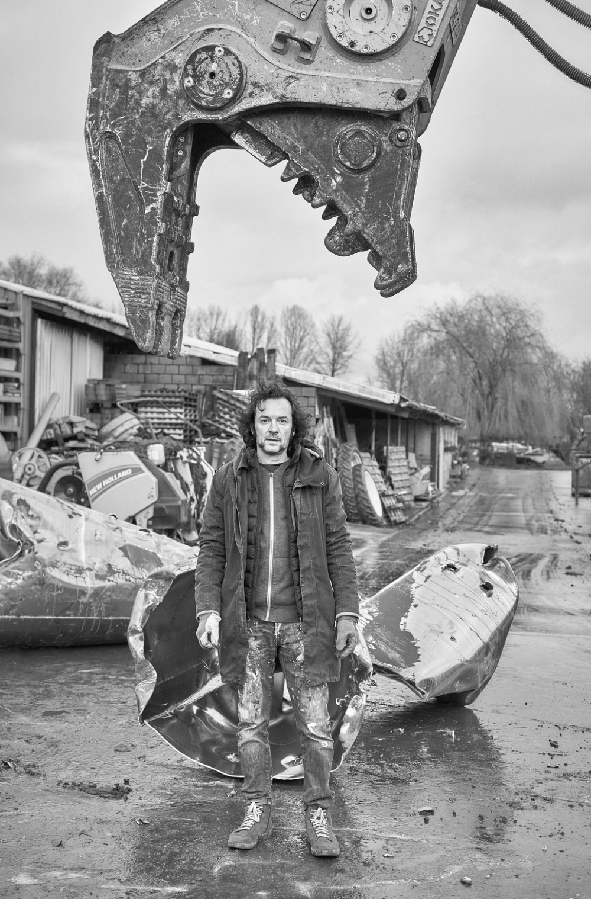

Docu film about Arne Quinze's artistic process
The Creation Of A Lupine Sculpture
After numerous sketches and studies with paint in the studio, after numerous paper models, after shaping the flower calyxes, after stacking and welding those cones, and after...
Learn more

If only we could build our cities as balanced as nature's ecosystems...
Our cities would be far more human. Arne Quinze continues to contest the greyness and dullness of the environments we live in. "Driven by the force of nature, I have the urge to guide our cities towards a better future. Since I was born in 1971, man has destroyed more than 30% of the world’s flora and fauna. To stop this terrible process, I believe the key is to make our living environments more human and green."
Read full bio